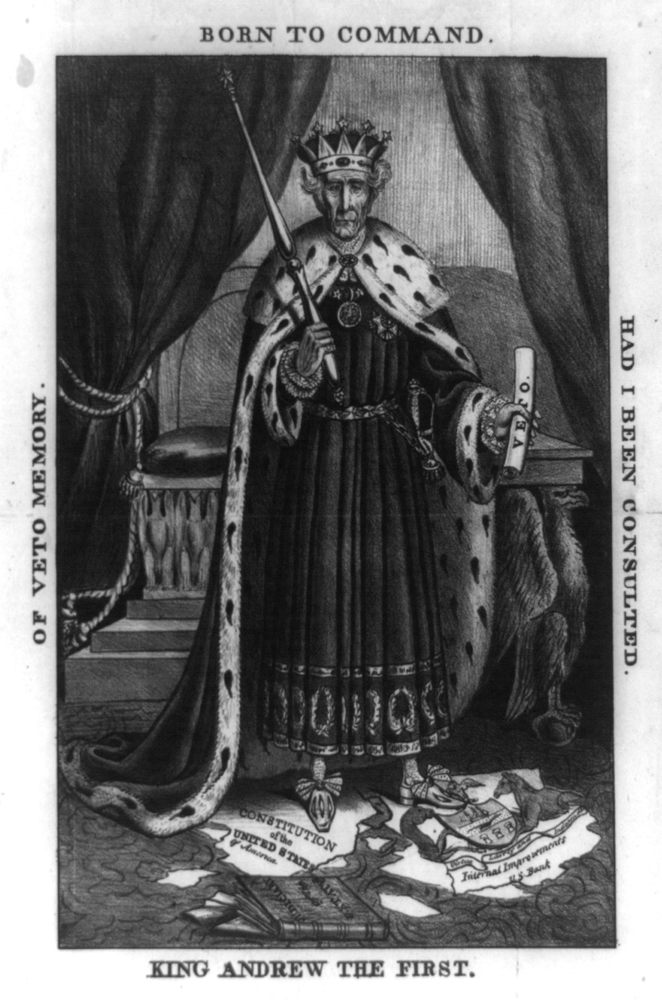

Directions: Read the full text, then answer the questions at the end.
The Second Bank of the United States, chartered by Congress in 1816 for twenty years, was the largest corporation in the country and the nearest thing the republic had to a financial government. From Philadelphia its president, Nicholas Biddle, directed branches across the country. The Bank held the federal deposits, moved the government's money, and issued banknotes that passed as a national currency. It also regulated the hundreds of state banks, by the plain device of presenting their notes for payment in gold and silver, which forced any bank that had lent too freely to pull in its loans. To its defenders this discipline kept the currency sound. To its borrowers it felt like a private power over their livelihoods, answerable to no voter.
The Bank's charter ran to 1836, and no decision was required in 1832. Biddle and Henry Clay forced one anyway. Clay, preparing to run against President Andrew Jackson, persuaded Biddle to apply for recharter four years early, calculating that Jackson would not dare veto a popular institution in an election year, and that if he did, the veto would cost him the presidency. Congress passed the recharter bill in the summer of 1832 and sent the question to the president's desk, where his enemies believed they had built him a trap. The Bank's friends prepared to make the election a referendum on one institution.
Jackson vetoed the recharter bill on July 10, 1832, and his veto message, read at Station 1 of the activity, was written for the country as much as for Congress. It held the Bank unconstitutional in spite of the Supreme Court, charged that foreign stockholders held much of its stock, and argued that exclusive privileges made the rich richer and the powerful more powerful, while farmers, mechanics, and laborers had a right to complain. Government, the message concluded, should shower its favors alike on the high and the low, the rich and the poor, as Heaven sends its rains. Jackson then carried the veto to the voters, and in November 1832 he was reelected by a wide margin, which he read as the people's verdict against the Bank.

The veto killed recharter, but the Bank still held the government's money and four years of charter. Jackson would not wait. In the fall of 1833, over the refusal of one treasury secretary, whom he removed, and through a second, Roger Taney, who obeyed, he ordered the federal deposits placed in selected state banks, which the Bank's defenders named in contempt the pet banks. The Senate, led by Clay, censured the president for assuming power the Constitution had not given him. In 1834 his opponents, National Republicans, Anti-Masons, and Democrats alienated by what they called executive usurpation, began joining in a new party named for the historic opponents of royal power, the Whigs.
Biddle answered removal with the Bank's own weapon. Through late 1833 and into 1834 the Bank contracted its loans sharply, producing a stringency meant to teach the public, and the president, that the currency could not live without its regulator. Distress petitions flooded Congress, but the pressure failed: most voters blamed the Bank, not the president, and Biddle eased the contraction having demonstrated precisely the private power over borrowers that the veto had charged. The federal charter expired in 1836. Meanwhile the pet banks, holding federal money and lending on thin reserves, fed a land boom, as settlers and speculators bought western acres with borrowed paper.
The boom rested on paper. State banknotes of doubtful backing paid for land, cotton, and imports bought on British credit, and Jackson's administration, hard money men who distrusted paper, moved to stop the speculation at the land office. In July 1836 the Treasury's Specie Circular, read at Station 5, ordered that after August 15 public lands be paid for in gold and silver only, with a settler's exception that expired in December. The order was meant to protect the Treasury and break the speculators. Its effect was to pull specie westward out of the eastern banks just as British lenders were calling in American credits and cotton prices were beginning to fall.
In May 1837 the banks of New York suspended payment in specie, and banks across the country followed. The Panic of 1837 had begun. Cotton prices and land values collapsed, indebted merchants and farmers failed together, workers lost wages and work, and a depression settled on the country that lasted into the 1840s. Jackson had retired in March, leaving his farewell address warning against paper money, and leaving the panic to his successor, Martin Van Buren. Van Buren refused to restore a national bank or put federal money back into state banks. He held that the government should divorce itself from banking altogether, and in 1840 his independent treasury system was enacted, under which the government kept its money in its own vaults, in the hands of its own officers. The Bank was dead, the currency question unsettled, and the bill for the war over it had been presented, in failed businesses and lost work, to people who had never held a Bank share or signed a veto.
1. State what the Second Bank did as the nation's regulator, naming the device by which it disciplined state banks, and state how that discipline looked from the two sides the reading names.
2. State why the recharter question was forced in 1832, four years before the charter expired, naming the two men who forced it and the trap they believed they were building.
3. State the veto message's charges against the Bank and its closing standard for government, and state what Jackson took his reelection in November 1832 to mean.
4. Trace the removal of the deposits as the reading gives it, from the secretary who refused to the name the Bank's defenders gave the state banks, and state the two political answers it produced, the censure and the new party.
5. In a short paragraph, answer the lesson question from the reading. Judge whether the Bank was a public good or a private power as the reading presents the evidence, and close by stating who paid when it fell, naming the panic's date, its effects, and the system Van Buren put in the Bank's place.
1. State what the Second Bank did as regulator. Chartered in 1816 for twenty years and directed from Philadelphia by Nicholas Biddle, the Bank held the federal deposits and issued notes that passed as a national currency. It regulated the state banks by presenting their notes for payment in gold and silver, forcing any bank that had lent too freely to pull in its loans. To defenders that discipline kept the currency sound; to borrowers it felt like a private power answerable to no voter. Both descriptions belong in a full answer.
2. State why the recharter question was forced in 1832. The charter ran to 1836 and no decision was required in 1832. Henry Clay, preparing his own run for the presidency, persuaded Nicholas Biddle to apply for recharter four years early. Their calculation was that Jackson would not dare veto a popular institution in an election year, and that if he did veto, the veto would cost him the presidency. Congress passed the bill in the summer of 1832. The trap failed on both horns: Jackson vetoed and was reelected.
3. State the veto's charges and its closing standard. The veto message of July 10, 1832 held the Bank unconstitutional in spite of the Supreme Court, charged that foreign stockholders held much of its stock, and called its privileges a monopoly whose grants made the rich richer and the powerful more powerful, while farmers, mechanics, and laborers had a right to complain of the injustice of their government. Its closing standard is that government should confine itself to equal protection and shower its favors alike on the high and the low, the rich and the poor, as Heaven does its rains. Jackson read his wide reelection in November 1832 as the people's verdict against the Bank.
4. Trace the removal of the deposits. In the fall of 1833 Jackson ordered the federal deposits withdrawn from the Bank and placed in selected state banks. One treasury secretary refused and was removed; a second, Roger Taney, obeyed and carried out the removal. The Bank's defenders named the chosen state banks the pet banks, in contempt. The political answers were two: the Senate, led by Clay, censured the president for assuming power not granted by the Constitution, and from 1834 his opponents began coalescing in the Whig Party, named for the historic opponents of royal power and united at first chiefly by resistance to what they called executive usurpation.
5. Answer the lesson question from the reading. Accept any judgment that uses the reading's evidence on both sides and closes with the cost accounted. The Bank as public good: it held the public money, supplied a national currency, and its discipline kept state bank lending and the currency sound. The Bank as private power: one unelected president of a corporation in Philadelphia could contract the nation's credit, and did in 1833 and 1834, to coerce a political result, which is the veto's charge demonstrated by the Bank's own president. When it fell, the pet banks' lending on thin reserves fed the land boom, the Specie Circular pulled specie west on the eve of British contraction, and in May 1837 banks across the country suspended payment in specie. Cotton and land values fell, debtors failed, workers lost work, and the depression ran into the 1840s and broke Van Buren's presidency. Van Buren's answer, enacted in 1840, was the independent treasury, the government keeping its money in its own vaults. The people who paid held no Bank shares: indebted farmers and merchants, and wage workers whose employers failed.